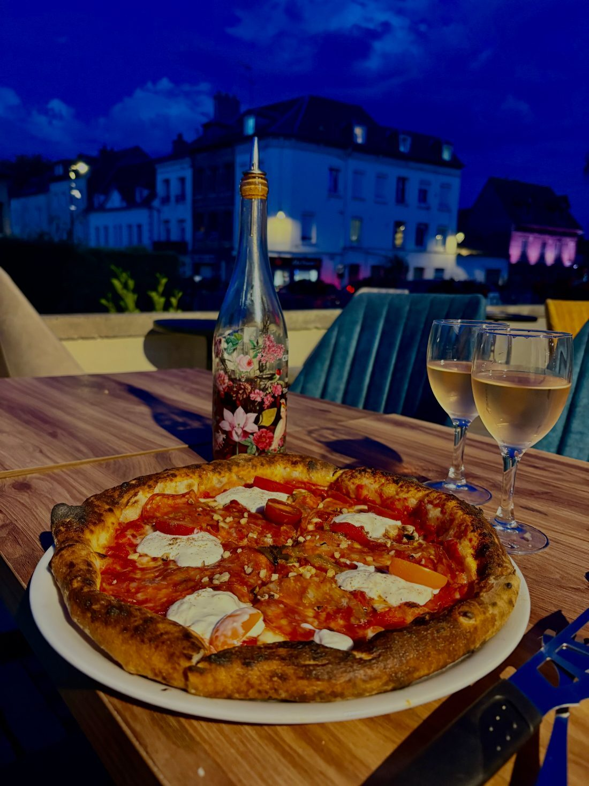

L'église Notre-Dame
Chef-d'œuvre du gothique flamboyant au cœur de la ville. Cherchez le vitrail n°26 : on y voit défiler… les drapiers de Louviers.

Nos racines · Louviers, Normandie
De Naples à Lisbonne… en passant par la Normandie. QENTINA est née au bord de l'Eure, dans une ville chargée de mille ans d'histoire. Voici la nôtre — celle de Louviers et du terroir qui inspire notre cuisine.
Une ville, une rivière
Entre rues et canaux, Louviers s'est construite autour de l'eau. Dès le Moyen Âge, la force de l'Eure fait tourner les moulins et rincer les laines : la ville devient l'une des grandes cités drapières du royaume, rivalisant avec Rouen. À la fin du XVIIe siècle, plus de 5 700 ouvriers y travaillent le drap, dont la réputation dépasse largement les frontières de la France.
Ce passé se lit encore partout : dans les bras de la rivière qui traversent le centre, dans les anciennes usines de briques et de colombages, et jusque dans les vitraux de l'église Notre-Dame, où un panneau représente la procession des drapiers de Louviers.
C'est sur cette même rivière que notre terrasse s'ouvre aujourd'hui. Mille ans après les drapiers, l'Eure continue de donner son âme à la ville — et un cadre unique à vos déjeuners et dîners.
Repères
Début de la construction de l'église Notre-Dame. Agrandie à partir de 1496, elle s'orne d'un porche de style gothique flamboyant d'une exubérance rare — le joyau de la ville.
Âge d'or du drap de Louviers. Les eaux pures de l'Eure font la renommée des étoffes lovériennes, prisées jusqu'à la cour.
Édification du couvent des Pénitents, dont le cloître est l'un des très rares d'Europe bâtis sur l'eau : ses galeries enjambent la rivière, et les moines vivaient au spectacle du courant.
Pierre Mendès France, installé à Louviers depuis 1930 et plus jeune député de France, devient maire de la ville — avant d'entrer dans l'histoire comme président du Conseil.
En juin, les bombardements détruisent une grande partie du centre-ville. L'hôtel de ville et Notre-Dame, miraculeusement épargnés, veillent sur la reconstruction.
Louviers cultive son patrimoine entre rivière, halles et ruelles — et une table au feu de bois s'est installée rue Maréchal Foch. 🍕
Avant ou après la pizza
À quelques pas de notre terrasse, trois trésors à découvrir le temps d'une balade digestive.
Chef-d'œuvre du gothique flamboyant au cœur de la ville. Cherchez le vitrail n°26 : on y voit défiler… les drapiers de Louviers.
Unique : un cloître du XVIIe siècle posé sur l'Eure. Tour à tour couvent, tribunal puis prison, il est classé monument historique.
Canaux, lavoirs, passerelles et maisons à colombages : le centre se découvre au fil de l'eau — jusqu'à notre terrasse.
Dans nos assiettes
La Normandie est la première région française pour le beurre, la crème et les fromages au lait de vache — Camembert, Pont-l'Évêque, Livarot, Neufchâtel… Ses vergers donnent pommes et cidre, ses prairies une crème incomparable, et ses rivières comme l'Eure une eau vive où grandit la truite.
Chez QENTINA, ce terroir dialogue chaque jour avec l'Italie : notre truite fumée rencontre la stracciatella, nos légumes de producteurs de la région passent au feu de bois, et nos desserts s'accompagnent de glaces artisanales normandes. De Naples à Lisbonne, oui — mais les pieds bien ancrés en Normandie.
Autour de Louviers
Louviers est un point de départ idéal. Nos coups de cœur, tous à moins de 30 minutes.
Aux Andelys, la forteresse de Richard Cœur de Lion, bâtie en un an (1198), domine l'une des plus belles boucles de la Seine.
Au confluent de l'Eure et de l'Iton, un château Renaissance et son parc, bordé d'un miroir d'eau de 400 mètres.
Son château, annonciateur de la Renaissance en France, fut en partie bâti des pierres de… Château-Gaillard.
Le village de Claude Monet, ses jardins et ses nymphéas — l'escapade impressionniste par excellence.
On vous attend
Après la balade, la récompense : une pizza napolitaine au feu de bois, en terrasse au bord de la rivière.